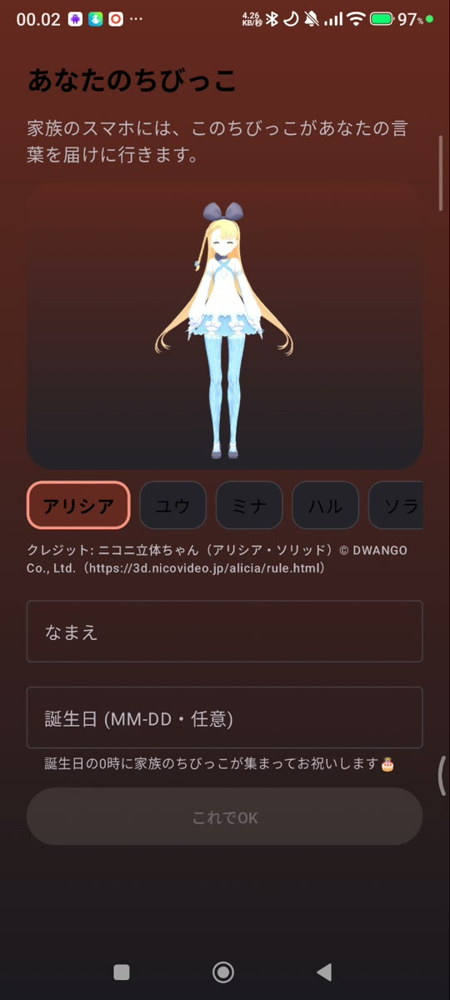
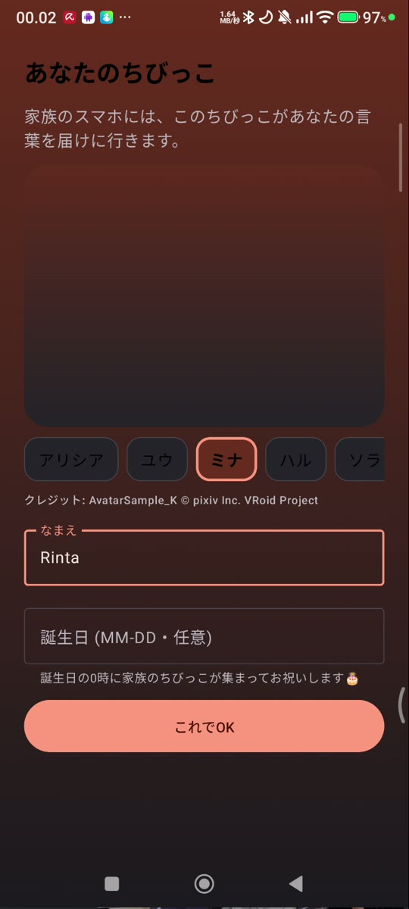
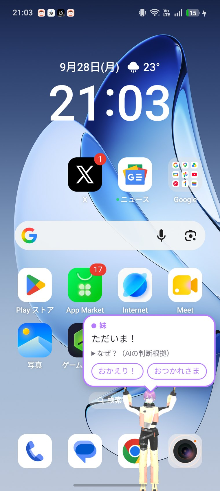

ちびっこには、メタバースやVTuberで広く使われるVRM形式の3Dアバターを使います。普段使っている自分のアバターも、そのまま家族のもとへ。
はじめに選んだアバターは、あとから 設定 → プロフィール でいつでも変えられます。変えた瞬間、家族全員のリビングとホーム画面のちびっこも入れ替わります。
同梱アバター：ユウ・ミナ・ハル・ソラ・サクラ・アリシア（AIちびっこ）

.vrm ファイルを選ぶ（80MBまで）
メッセージの内容から気持ちと急ぎ具合を読みとり、表情・動き・エフェクトを自動で選びます。
ホーム画面のちびっこは指でつかんで動かせます。勢いよく投げると跳ねて着地し、画面の外まで投げると…すねて、あとで端からのぞきにきます。
表示の大きさ・常駐するかどうかは 設定 → ちびっこ で変えられます。
